Гостиная · журнал «ДентАрт» 2016 №2
Лаура Андрюкайтене: «У нас є внутрішній вогонь, який нас кличе, щоб ми всьому навчилися»
LAURA ANDRIUKAITIENE: WE HAVE AN INNER FIRE THAT CALLS US TO LEARN EVERYTHING
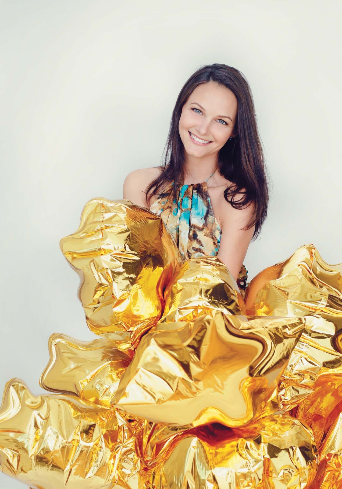
У «Вітальні» весняного «ДентАрту» ми розмовляємо з відомим професіоналом, інноватором мікроскопної стоматології і дуже привабливою людиною — доктором Лаурою Андрюкайтене, президентом Європейського співтовариства мікроскопної стоматології (ESMD), а також Балтійського товариства мікроскопної одонтології.
«Усі знали мене як доньку дуже гарного стоматолога»
— Дорога Лауро, дякуємо, що ви погодилися на це інтерв'ю. Ми розмовляємо після закінчення основної частини наукової програми величезного успішного конгресу, все на емоціях. Ми давно хотіли запросити Вас у «Вітальню» і чекали весни, тому що всі, хто Вас знає, асоціюють з весною. З квітучою весною.
— Це дуже приємно.
— У цій рубриці «ДентАрту» ми намагаємося подивитися на нашу професію через долю конкретної людини, яку ми запрошуємо. Традиційно ми запитуємо: як Ви вирішили стати стоматологом?
— Це сталося якось природно. Звичайно, мій тато — стоматолог, треба з цього починати. Я народилася в маленькому містечку, і всі знали мене як доньку дуже гарного стоматолога. Це і вплинуло на мій вибір. Хотілося стати такою, як тато. Він був і залишається великим-великим авторитетом у моєму професійному і особистому житті. Я подумала, що ця професія пов'язана з мистецтвом і з дуже серйозною справою, адже від стоматолога багато в чому залежить, як людина почуватиметься, яке здоров'я буде у неї, це відповідальна справа. До того ж, як то кажуть, це професія «з польотом». Коли у мене бувають курси, я кажу курсантам, що ендодонтія — це дисципліна, де ми, маючи ту чи іншу систему інструментів, дотримуємося протоколів. Але іноді це нас сильно обмежує, і ми не знаємо, як діяти у складніших або цікавіших ситуаціях. А коли ми відпускаємо в політ свою майстерність і свою фантазію, то дивимося на клінічну ситуацію не лише як на серйозну справу, і тоді починається гра між інструментами, між технологіями, між методиками, і все виходить.
«Пол Даммер залишив мене у фантомному класі разом з мікроскопом — на тиждень...»
— Стоматологія дуже багатогранна, і кожному стоматологові, кожній людині можна знайти своє місце. Але Ви обрали саме стоматологію зі збільшенням і ендодонтію, в якій без збільшення важко обійтися. Хоча багато хто обходився і обходиться, вони не знають, як це може бути по-іншому. Чому Ви обрали саме збільшення і ендодонтію?
— Мені завжди подобалося робити щось маленьке. Я закінчила школу мистецтв. Знаю, що багато стоматологів свого часу навчалися чи закінчили школу мистецтв. Це був вагомий аргумент стати стоматологом. У школі я почала захоплюватися графікою. Це дуже точна, дуже дрібна робота. Дрібна робота, в маленькому просторі — це нелегко. Але саме це мені і подобається. У стоматології у мене були дуже гарні вчителі, молоді, але дуже цілеспрямовані, орієнтовані на нові методики, нові інструменти. Напевно, я народилася гарної пори, тому що коли настав час вибирати, в ендодонтії з'явилися дуже хороші інструменти — НіТі-інструменти. Я просто все це в себе увібрала.
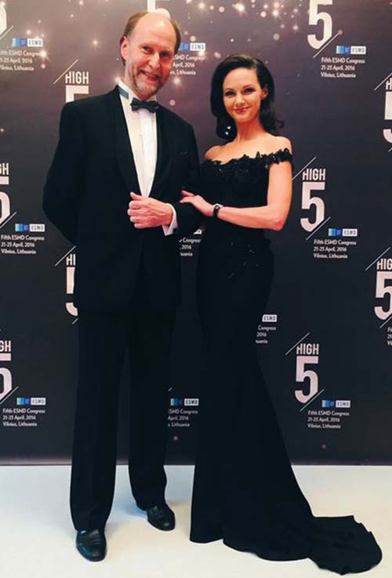
Засновники Європейського співтовариства мікроскопної стоматології (ESMD) Філіп Ван Ауденхов і Лаура Андрюкайтене.
А збільшення... Я поїхала на спеціалізацію в Кардіфф (Уельс), і мені професор Пол Даммер, який був супервайзером моєї програми, приніс мікроскоп, поставив і сказав, що вже через тиждень я повинна вміти ним користуватися. Показав трішки, як збільшувати, зменшувати і залишив мене у фантомному класі разом з мікроскопом — на тиждень... Я там мучилася, і плакала-ридала, і сміялася, але все-таки я його вивчила, пристосувала до себе. І коли я побачила вперше під збільшенням те, що є всередині зуба, всередині каналу, то жахнулася: що ж я до цього робила? Як я все це робила, і що мені тепер робити з тими пацієнтами, які у мене були? Я була аспіранткою другого курсу аспірантури, і у мене було багато пацієнтів, яких я лікувала без мікроскопа. Коли я виявила медіальнощічний другий канал і переконалася, що він зустрічається в зубах часто (якщо не стовідсотково), я не могла повернутися в ту стадію, з якої тільки-но пішла. Знала, що мікроскоп може дати мені дуже багато, але я повинна навчитися, як його пристосовувати, як з ним правильно працювати. Якось я натрапила на оголошення про конгрес Американської академії мікроскопної стоматології, поїхала, і тоді для мене відкрився весь мікроскопний світ. З того конгресу я повернулася зовсім іншою людиною. У мене вже не було жодних сумнівів щодо мікроскопа, методик. Я знала, що це буде мій шлях.
«В ендодонтії мікроскоп — уже обов'язковий атрибут, але в інших сферах він просувається ще важкувато»
— Ви не вперше і не перший рік очолюєте Європейське співтовариство мікроскопної стоматології. Ми зараз розмовляємо після завершення основної наукової програми, ще чотири дні буде майстер-клас. Очолюєте також аналогічне Балтійське товариство. Чи можете розповісти докладніше про ці організації, тому що, якби не знайомство з Вами, я б і не знав, що такі існують.
— Ці організації і схожі, і трохи відрізняються. Спершу я познайомилася з американською організацією, і в той же час — з Філіпом Ван Ауденховом, який був її членом. І за обідом у перерві конференції він сказав: «А чому б нам не організувати таке співтовариство в Європі? Адже у нас теж поширюється мікроскопна одонтологія, і люди, напевно, будуть зацікавлені. Навіщо їхати так далеко, якщо ми можемо зібратися, такі самі практики, і вчитися недалеко від свого дому?» Я сказала, що завжди підтримуватиму цю ідею. Але якось усе затихло. А потім я в Інтернеті побачила, що буде відбуватися перший конгрес Європейської асоціації мікроскопної стоматології в Амстердамі. Я кажу своєму чоловікові, все, я поїхала. На конгрес зібралися справжні професіонали. Подивилася, що вони роблять, і мені захотілося стати частинкою цієї організації. Головна наша мета — це поширення мікроскопної одонтології в Європі і у всіх сферах. Тому що в ендодонтії мікроскоп — це вже обов'язковий атрибут, а в інших сферах він просувається ще важкувато. Коли я стала членом цієї організації, всі подумали, що я знаменитий ендодонт, і від нас різко відпали реставраційні фахівці, протезисти. Дивлячись на мене, вони думали, що всі наші заходи з ендодонтії. Мені доводилося закривати ендодонтичні теми, доповіді з ендодонтії в програмах, щоб залучити якомога більше інших дисциплін. І своїм друзям, своїм колегам, іншим лікарям я говорила, що мікроскоп можна застосовувати не лише в ендодонтії, але і в інших сферах. І важливо, що стоматологічні факультети почали навчати своїх студентів застосуванню мікроскопа.
— Балтійське товариство діє тільки в Литві чи і в інших країнах Балтії?
— Ми поки що працюємо тільки в Литві. Нам нескладно своїх колег запрошувати на заходи. У нас у Литві понад 200 мікроскопів (а практикуючих стоматологів, напевно, близько 1500). Така кількість мікроскопів — чимало, і ми можемо робити невеликі заходи, поширювати знання далі, і на наших заходах стали з'являтися люди, які не мають мікроскопів, але думають їх придбати. А ті, хто мав мікроскопи, стали приїжджати, коли ми почали організовувати курси з ергономіки. Люди стали говорити, що ми відкрили для них мікроскоп, вони побачили дуже красиву роботу, але коли почали працювати самі, у них з'явилося багато проблем, з якими вони не могли впоратися. Хтось не говорить англійською, у когось немає коштів, щоб поїхати вчитися на Захід, і ми створили такі умови, щоб вони могли навчатися рідною мовою, у своїй країні. І наша найбільша мета — навчати тих, хто вже має мікроскопи, щоб мікроскоп став для них таким простим нормальним інструментом, як зонд, дзеркало чи стоматустановка. В інших балтійських країнах — Латвії, Естонії — даємо про себе знати, але поки що у нас достатньо роботи в Литві.
— Фінляндія, Швеція — теж балтійські країни...
— Звичайно. Є деякі контакти у Фінляндії. Вони хочуть навчати своїх опініон-лідерів у нашому центрі. Напевно, ми підемо й далі, але найголовніше, що у нас добре виходить і в нас вірять наші колеги на батьківщині. Це великий комплімент. Часто буває, що у своїй країні, у своєму гнізді залишаєшся невизнаним...
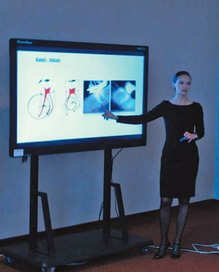
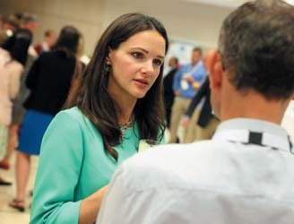
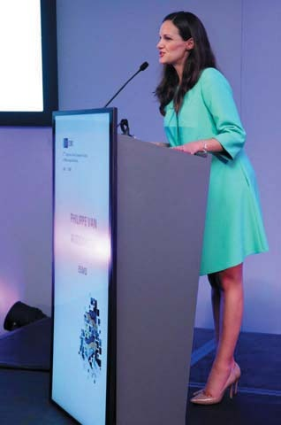
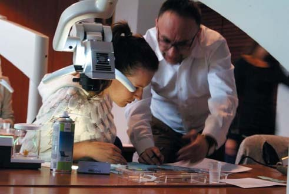
«Після вступу до Євросоюзу все стало тільки краще»
— Литва — член Євросоюзу, і стоматологи у своїй практиці мають дотримуватися рекомендацій Єврокомісії та Євросоюзу. Як змінилася професійне життя литовських стоматологів після зміни економічної системи?
— Головне, що до часу проголошення незалежності стоматологи почали відкривати свої приватні практики. Мій тато працював у державній поліклініці і вже почав працювати на себе, створювати свою приватну практику. А тепер у Литві практично вся стоматологія приватна. Вона має свої плюси і свої мінуси. Не всі можуть створити великі, суперуспішні клініки. Але є конкуренція серед клінік, стала іншою відповідальність лікарів за пацієнтів, усі стали більше наглядати за своїми пацієнтами. Ми навіть говоримо «мій пацієнт», ми з ним зливаємося по життю, і він для нас — не лише джерело доходу. Його лояльність засвідчує, що ми хороші, він не йде від нас. Мені здається, все стало тільки краще. Те, що стали членом Євросоюзу, відкрило нам багато країн, ми можемо легко їздити, навчатися у найкращих одонтологів світу. Багато литовських стоматологів працює в інших країнах, і вони там себе добре зарекомендували. Тому що школи у нас старі, добрі, ми роботяги, не боїмося нелегкої роботи. Ентузіасти. І ми прагнемо наздогнати рівень європейської стоматології. У нас є великий інтерес, внутрішній вогонь, який нас кличе, щоб ми всьому навчилися. Я дивлюся на своїх студентів, багато з них прагнуть всюди побувати. Вони їдуть в інші країни, збирають гроші, просять своїх батьків, їдуть навчатися і повертаються з такими якісними знаннями і підвищують набагато рівень стоматології.
— Скільки членів у Європейському співтоваристві?
— На жаль, не так уже й багато... Щороку після конгресу (зі зрозумілих причин) кількість членів зменшується, а потім перед конгресом знову збільшується. У нас приблизно 50 лояльних колег, які є членами і беруть участь у конгресах, це вже як сім'я.
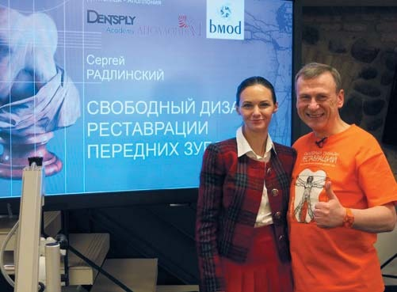
Лаура Андрюкайтене запросила у Вільнюс вільний дизайн реставрації з «Аполлонії».
— Ми знаємо, що в Литві стоматологи відділилися від Міністерства охорони здоров'я, організувавши одонтологічну (тобто стоматологічну) палату. Що змінилося після цього поділу? Які переваги такої самостійності для практикуючого стоматолога?
— По-литовському це називається одонтологічний рум (одонтологічний палац), де працюють люди, які розуміють проблеми практикуючих стоматологів, і це краще, ніж бути в гущі всього МОЗ, де ніхто не знає, які у нас проблеми. Вважається, що стоматологи і так добре живуть у порівнянні з іншими медиками, це інша категорія. А коли у нас є свій палац (палата), там ми можемо вирішувати всі свої проблеми. У нас свої закони, є підрозділи в інших містах, периферіях, вони висловлюють свої проблеми, і в палаті вони обговорюються. Там працюють люди, які добре знайомі з проблемами стоматології, нашим повсякденним життям. Багато років цю палату очолювала Анастасія Туткувене, а нині очолює Антануш Чікус.
— Змін без втрат не буває, коли щось стає кращим, то щось стає гіршим. Що було раніше краще, коли стоматологія перебувала в системі МОЗ і управлялося все з єдиного центру?
— Напевно, ліцензію було отримувати трохи легше. Ми йдемо по шляху Європейського союзу, все змінюється, все регуляції змінюються, з'являються нові декларації, нові способи реєстрації інтернаціональних сертифікатів, які ми привозимо з міжнародних заходів. Але що зручно: усі стоматологічні заходи, які проводяться за узгодженням з нашою палатою, відразу автоматично реєструються в їхній системі, і тому стало дуже просто робити реєстрацію своєї діяльності і продовження післядипломного навчання. У них є всі дані, і немає жодних проблем. Я не можу сказати, що ми маємо якісь дуже великі втрати. Ні. Тепер МОЗ знову намагається повернути одонтологічну палату під своє керівництво, але палата трошки пручається, і правильно. Палата існує, і організаторам легко, і стоматологам легко, це система, яка функціонує добре.
— Ви як практикуючий стоматолог маєте постійно підтверджувати своє право лікувати, свою кваліфікацію. Як реформа змінила післядипломну освіту?
— Ми повинні накопичувати години навчання, кілька сотень годин. Вони повинні бути в системі нашої палати (це місцеві заходи). Але якщо ми навчаємося в інших країнах, тоді привозимо дипломи, і вони всі ці години зараховують. Ми маємо накопичувати години через п'ять років. І обов'язково проходити деякі специфічні курси. Кожні п'ять років підбиваються підсумки, і тоді дають дозвіл, ліцензія продовжується.
— Лауро, Ви згадали Пола Даммера, він член редколегії нашого журналу. Чи можете розповісти про свою наукову роботу, оскільки Ви її виконували в Європі, об'їздили багато наукових центрів? Чи використовуєте Ви результати своєї наукової роботи в практиці?
— З Полом Даммером я зустрілася вперше, як уже говорила, коли була аспіранткою. Поїздка в Кардіфф стала для мене шоком з хорошого боку, і Пол Даммер був першою людиною, людяним професором, якого я зустріла і не відчувала жодної дистанції, він по-дружньому з нами спілкувався. Він турбувався, щоб нам було цікаво і вигідно навчатися. Я багато чого вивчила і вперше з професором Даммером доторкнулася до наукової роботи. У Кардіффі я була лише помічницею, але була вже в проекті, в якому відбувалося багато цікавого, і це стало для мене відкриттям, яке підштовхує до моєї справжньої роботи. Я досліджую ендодонтичні силери, їх фізичні властивості. У мене є клінічні приклади використання тих чи інших силерів, які потрібні для сучасної практики. Коли я почала цю дослідницьку роботу, мені було дуже важко бути об'єктивною, оскільки я симпатизувала певному силеру. Але було дуже цікаво досліджувати застосування інших силерів з гарними властивостями.
— Ваш улюблений силер підтвердив свою репутацію?
— Поки що підтверджує, але мені здається, настає нова ера.
— Ви закінчили свою наукову роботу?
— Практично закінчила, але потрібно надрукувати свої статті, захисту ще не було.
— Ви потомствений стоматолог, у Вас стоматологічна сім'я, і Ви закінчуєте свою власну клініку, вона невдовзі буде відкриватися. У стоматології спадкоємність — звичайне явище. Чи бачите Ви стоматологами своїх синів?
— Моєму старшому синові 18 років, а молодший ще маленький, йому лише півтора року. Мені вже зрозуміло, що мій перший син не буде одонтологом, тому що йому подобається бізнес, маркетинг. Він ніколи не виявляв симпатій до медицини, завжди був спрямований до інших сфер. І я лише можу сподіватися, що малюкові сподобається моя професія і він стане спадкоємцем нашої клініки. Але я дала собі обіцянку, що ніколи не буду впливати на їхні рішення. Коли вони бачать, як працюють їхні батьки, як вони щасливі, це вже формує їхню психологію, їхнє ставлення. Я щаслива у своїй роботі, мій чоловік у своїй, хоча він, стоматолог, пішов в інший бізнес, і старший син схиляється до нього. Тому я не хочу тиснути на їхні рішення, адже це так важливо — обрати свою професію, яка приносить задоволення, це найбільше щастя! Моя робота — це не лише робота, це велика частина мого життя. Я така рада, що відразу знайшла себе в цій професії, а своїм синам я хочу побажати щастя і вільного інформованого вибору.
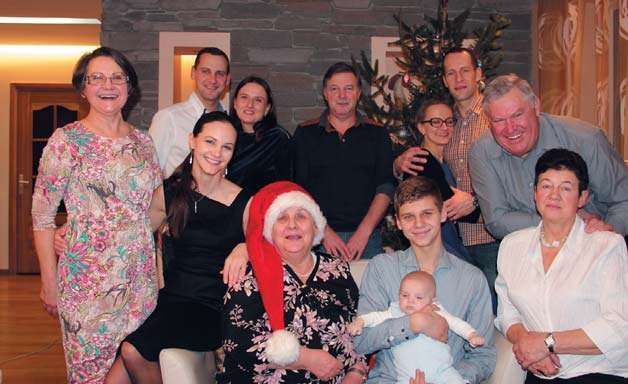
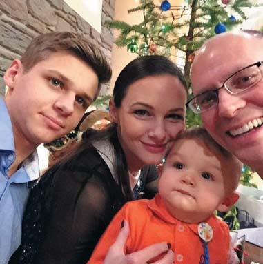
У колі сім'ї.
«І заїдаю стрес, і запиваю, й іноді люблю швидкість — але все під контролем»
— Стоматологія — спеціальність стресова, за Вашої багатогранної активності важко уникнути професійного вигорання, особливо після конгресу...
— Так, після кожного конгресу я кажу собі, що це мій останній конгрес. Але після місяця відпочинку у мене знову купа ідей, енергії, і ми продовжуємо!
— Стрес потрібно знімати. Як з ним боретеся Ви?
— Мені подобається бути трохи в напрузі, коли щось крутиться навколо, щось будується, якийсь проект ми робимо, це мене тримає постійно в тонусі. І звичайно, деякі ситуації бувають і стресовими. Але мені здається, є стрес позитивний і негативний. Негативного стресу не уникнути, але позитивний стрес мені дуже подобається. Знімаю я негативний стрес так: люблю подорожувати, займаюся тенісом, «заїдаю» гарною їжею, хорошими винами. Усе в поєднанні: подорожі на тенісні матчі, з гарними вечерями, десь в інших країнах. Подорожі мене розслаблюють, вони відносять далеко від проблем. Після таких канікул я повертаюся сповнена енергії, нових сил, ідей. Мені відразу треба працювати над новими проектами або продовжувати старі.
— Хтось заїдає стрес, хтось компенсує спортом, хтось шопінгом, а хтось знімає стрес їздою на автомобілі...
Я і заїдаю, і запиваю, і теж іноді люблю швидкість. Однак усе обов'язково під контролем: і їжа, і напої, і швидкість. (Сміється). Але найбільше я не люблю знімати стрес шопінгом. Багато жінок це роблять, але не я. Коли у мене стрес, я не хочу в магазин, а от коли розслаблена, тоді можу себе побалувати.
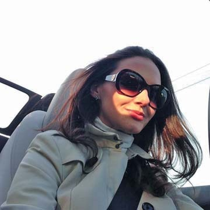
Найліпший спосіб зняття стресу — швидка їзда!
— Традиційне побажання стоматологам... Усім до мікроскопа?
—Так. Напевно, тільки ортодонтам це не потрібно.
— А можливо, і потрібно. Я часто зустрічаю, що після брекетів емаль ортодонти намагаються очистити самі.
— У нас це роблять гігієністи. Гарні окуляри або лупи — обов'язковий інструмент гігієніста. А щодо гасла «Всім до мікроскопа!» — це безумовно. Я раджу: ви подивіться, що ви можете побачити, тоді скажете, потрібен вам мікроскоп чи ні. І я ще жодного разу не почула негативної відповіді. А як його пристосувати і зробити зручним для користувача — це треба багато працювати, треба вивчати. Але нічого не дається легко. Усе можливо, якщо я можу, ви можете, тоді й інша людина може. Той, хто закінчив стоматологічний університет, — він уже талановитий.
— Чи є гімн у співтовариства мікроскопної стоматології?
— Немає.
— А фірмові пісні?
— Немає. Але є пісні, які ми дуже любимо, як «Yesterday» групи «Бітлз».
— Це після навчання у Пола Даммера?
— Ні, це сталося після того, як ми були на одному заході в Японії. Японці дуже люблять караоке. Ось там ми і заспівали «Yesterday». У нас є відеокліп, як ми там співаємо. Головний месидж, що ми співали від щирого серця, раді були, що ми разом. Усі говорять, що нині ера он-лайн мітингів, але я вважаю, що це зовсім не те, коли ми буваємо разом, коли і тілом, і душею ти там, де хочеш бути, з вірними друзями, талановитими колегами, чудовими лекторами. Це нічим не замінити, жодними он-лайн мітингами.
— Спасибі за інтерв'ю! Бажаємо успіхів у всіх сферах Вашої діяльності!
— Дякую!
Розмовляв Сергій Радлінський.
Фото з архіву Лаури Андрюкайтене.
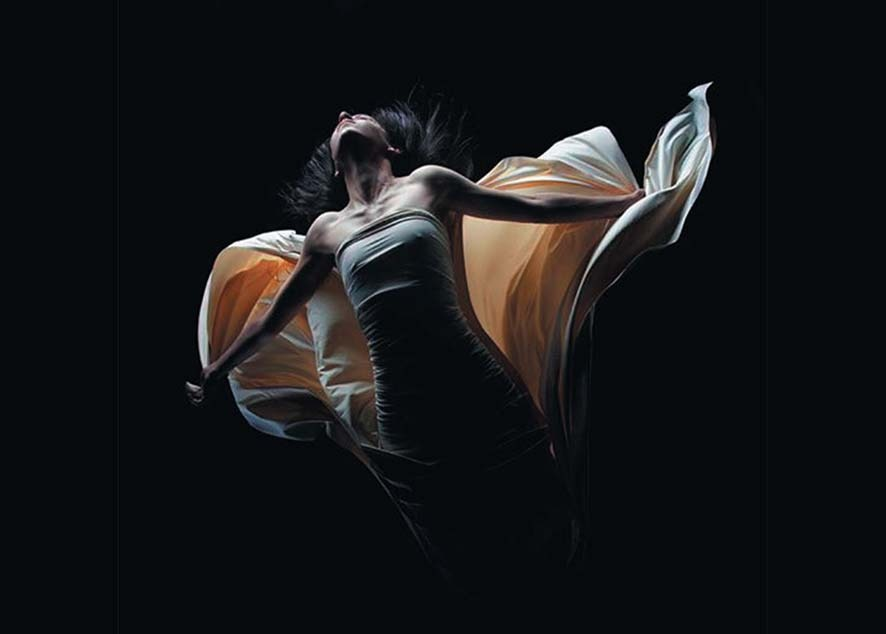